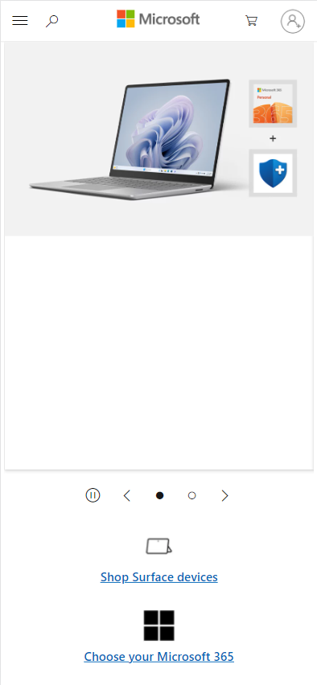
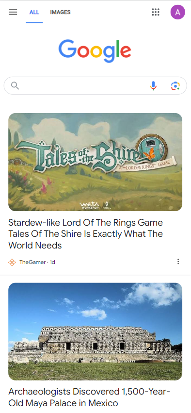

White Space and Clean Design
Microsoft
microsoft.com
Microsoft is a great example of white space in design. They have gone for a clean, uncluttered webpage. There isn’t a distracting background image and the colors are mostly light and muted. Because of this, what color they do use pops and grabs the users attention. Overall this site looks like it is designed to serve a function without wasting the users time with distracting visuals.
Hick's Law
Netflix
netflix.com
Hick’s law states that the more options a user has the less time they will spend looking at each option. This is utilized well in Netflix’s home page. The only options at the top and center of the page are buttons and fields which will lead you to sign in to stream content. This creates a funnel to the main feature that Netflix offers.
Fitt's Law
>google.com
Fitt’s Law says that the time it takes a user to click on a button is a function of the distance of the mouse (or finger) from the button and the size of that button. This means that the bigger the button or interactable field, the quicker the user will get to it. This in turn means that they are more likely to use the site and not leave it. This is shown well with Google’s prominent search field and featured articles. You probably went to the site to search for something, but the prominence of the suggested articles means they are more likely to get you to click on them and will increase the time you spend on the site.